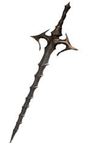
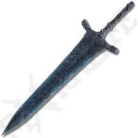

Itens Notáveis
Stormruler:

Stormruler é uma espada que aparece em Demon's Souls e Dark Souls 3, ambas das vezes é utilizada como mecânica para um boss em específico.
Moonlight Greatsword:

A Moonlight Greatsword é uma espada que aparece em um dos King's Field, em Demon's Souls, na série Dark Souls inteira, e no Elden Ring, é a espada queridinha da Fromsoftware.